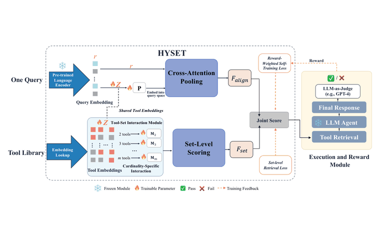
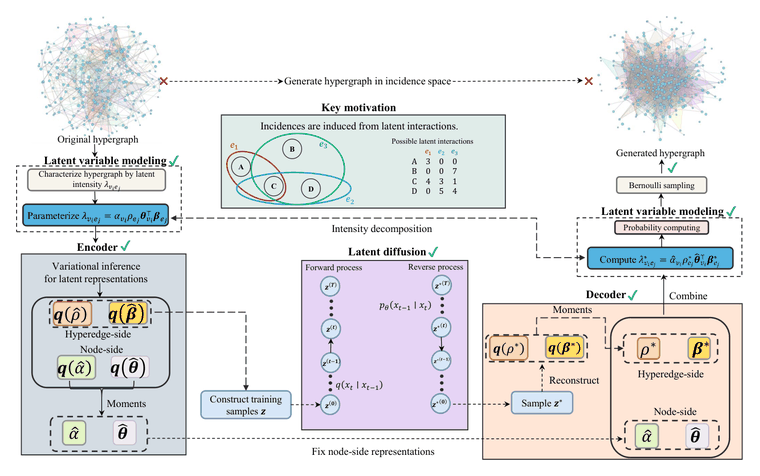
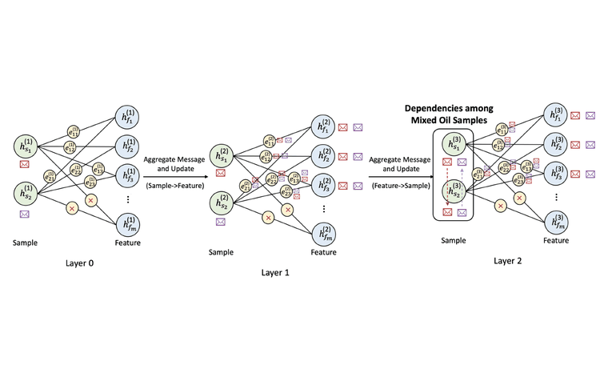

将于上海交通大学数学科学学院开始统计学博士阶段的学习，导师为任明旸教授。
个人简介 🙋
中文/EN我是上海交通大学数学科学学院人工智能与统计方向的博士研究生，导师为任明旸教授。此前，我在华东师范大学统计学院完成了统计学与计算机科学的学士学位，并获评优秀本科毕业论文。2026 年春季，我在香港理工大学数据科学与人工智能系担任研究助理，由蒋滨雁教授指导。
我目前的研究方向是多模态基座模型的 post-training，尤其是 flow matching 模型的 on-policy distillation。我致力于在统计机器学习的框架上构建 post-training 算法，并通过大规模实验与评测加以验证，以理解这些方法在基座模型规模上何时、又为何依然可靠。
近期动态 📢
左右滑动查看 →论文 📄
* 通讯作者
Tools Are Not Islands: Set-Level Tool Retrieval for LLM Agents via Query-Conditioned Hyperedge Prediction
投稿于 AAAI Conference on Artificial Intelligence (AAAI) 2026，审稿中
arXiv:2607.25718

HYVINT: Intensity-Driven Hypergraph Generation with Variational Embeddings
投稿于 AAAI Conference on Artificial Intelligence (AAAI) 2026，审稿中
arXiv:2605.16836

Enhancing Mixed Oil Length Prediction through Graph Representation Learning
投稿于 Journal of Pipeline Science and Engineering，审稿中
该方向暂无论文。
经历 🚀
教育背景 🎓
华东师范大学
2022.09 - 2026.06
统计学与计算机科学学士 · 统计学院
荣誉 🏅
优秀本科毕业论文华东师范大学
2026.06
优秀本科毕业生华东师范大学
2026.06
国家二等奖（队长）全国大学生统计建模大赛
2024.08
优秀毕业生合肥市第一中学
2022.06
入围少年班西安交通大学
2019.03
技能与语言 🛠️
人工智能
多模态基座模型, Flow Matching / 扩散模型, post-training, 大模型智能体, Scaling Laws
统计学
高维统计推断, 经验过程理论, 最优传输, 变分推断, 不确定性量化, ODE/SDE
工程
Python, PyTorch, Flash Attention, FSDP, Megatron-LM, vLLM, SGLang, Slurm
语言
普通话（母语）, 英语（专业工作能力）, 粤语（口语交流）, 日语（初学）
GitHub 活跃度
联系方式 💌
欢迎就生成式基座模型的 post-training 方向进行交流与合作，可通过 xinyi.hong@sjtu.edu.cn 与我联系。